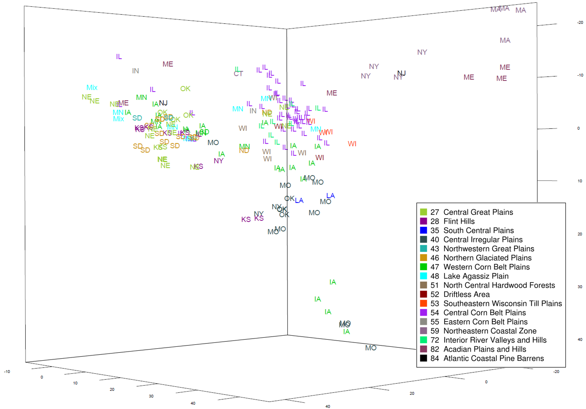

Prairie cordgrass distribution shaped by glaciation
Map of geographic patterns of inferred sub-groups at K=3. Red = Central Midwest and east. Dark blue = North Midwest. Light blue and red = Strong admixture between group 1 and group 2. Yellow = South Midwest. Black solid line indicates approximate extent of glaciation during last (Wisconsin) ice age. Red solid line indicates approximate extent of earlier glaciations.

Divergence and sub-group patterns indicated by principal component analysis using the first three components (8.8%, 2.6%, and 2.5% of total variance, respectively). Colors corresponds to Ecoregion level III codes and names. Populations were labeled as the name of state where the rhizomes or seed were collected.
